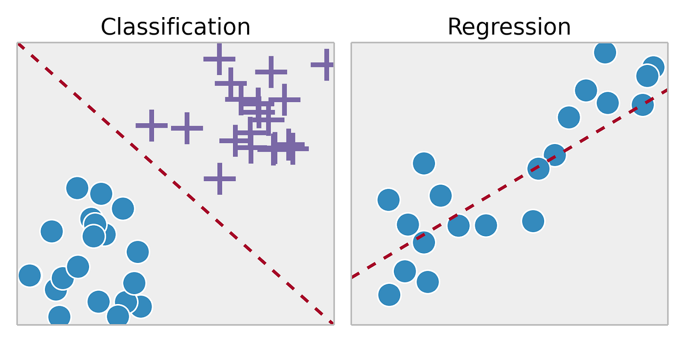
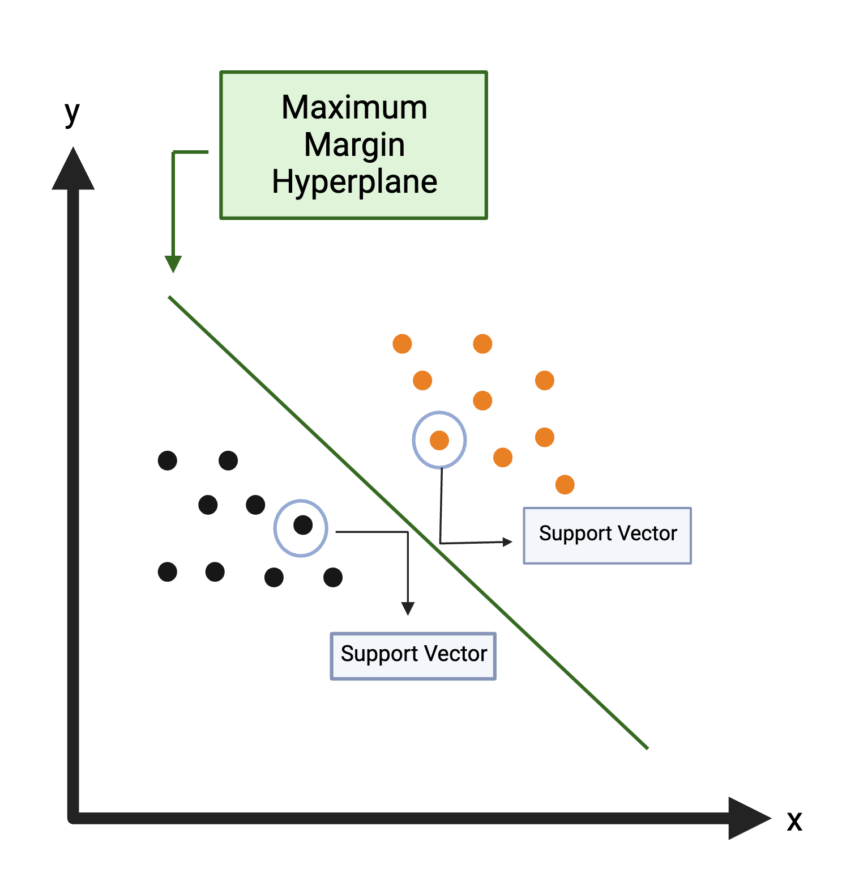
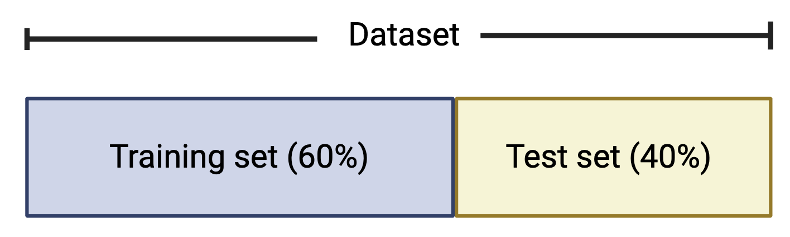
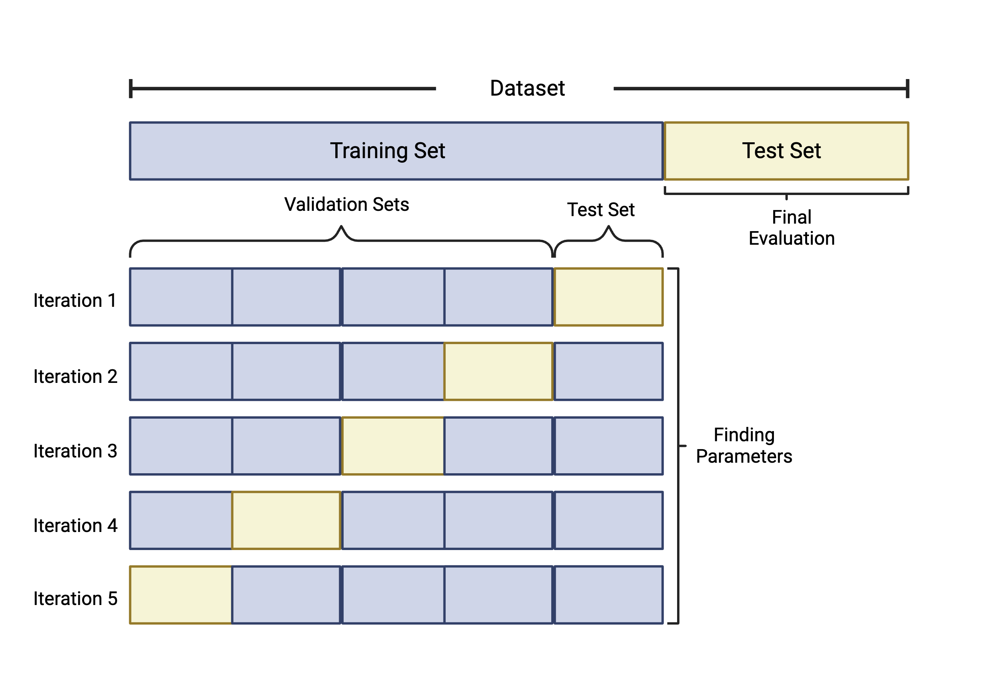

Supervised Machine Learning
This training module was developed by Alexis Payton, Oyemwenosa N. Avenbuan, Lauren E. Koval, and Julia E. Rager.
All input files (script, data, and figures) can be downloaded from the UNC-SRP TAME2 GitHub website.
Introduction to Training Module
Machine learning is a field that has been around for decades but has exploded in popularity and utility in recent years due to the proliferation of big and/or high dimensional data. Machine learning has the ability to sift through and learn from large volumes of data and use that knowledge to solve problems. The challenges of high dimensional data as they pertain to environmental health and the applications of machine learning to mitigate some of those challenges are discussed further in Payton et. al. In this module, we will introduce different types of machine learning and then focus in on supervised machine learning, including how to train and assess supervised machine learning models. We will then analyze an example dataset with supervised machine learning highlighting an example with random forest modeling.
Types of Machine Learning
Within the field of machine learning, there are many different types of algorithms that can be leveraged to address environmental health research questions. The two broad categories of machine learning frequently applied to environmental health research are: (1) supervised machine learning and (2) unsupervised machine learning.
Supervised machine learning involves training a model using a labeled dataset, where each independent or predictor variable is associated with a dependent variable with a known outcome. This allows the model to learn how to predict the labeled outcome on data it hasn’t “seen” before based on the patterns and relationships it previously identified in the data. For example, supervised machine learning has been used for cancer prediction and prognosis based on variables like tumor size, stage, and age (Lynch et. al, Asadi et. al).
Supervised machine learning includes:
- Classification: Using algorithms to classify a categorical outcome (ie. plant species, disease status, etc.)
- Regression: Using algorithms to predict a continuous outcome (ie. gene expression, chemical concentration, etc.)

Soni, D. (2018, March 22). Supervised vs. Unsupervised Learning. Towards Data Science; Towards Data Science. https://towardsdatascience.com/supervised-vs-unsupervised-learning-14f68e32ea8d
Unsupervised machine learning, on the other hand, involves using models to find patterns or associations between variables in a dataset that lacks a known or labeled outcome. For example, unsupervised machine learning has been used to identify new patterns across genes that are co-expressed, informing potential biological pathways mediating human disease (Botía et. al, Pagnuco et. al).

Overall, the distinction between supervised and unsupervised learning is an important concept in machine learning, as it can inform the choice of algorithms and techniques used to analyze and make predictions from data. It is worth noting that there are also other types of machine learning, such as semi-supervised learning, reinforcement learning, and deep learning, though we will not further discuss these topics in this module.
Types of Supervised Machine Learning Algorithms
Although this module’s example will focus on a random forest model in the coding example below, other commonly used algorithms for supervised machine learning include:
K-Nearest Neighbors (KNN): Uses distance to classify a data point in the test set based upon the most common class of neighboring data points from the training set. For more information on KNN, see K-Nearest Neighbor.

Support Vector Machine (SVM): Creates a decision boundary line (hyperplane) in n-dimensional space to separate the data into each class so that when new data is presented, they can be easily categorized. For more information on SVM, see Support Vector Machine. 
Random Forest (RF): Uses a multitude of decision trees trained on a subset of different samples from the training set and the resulting classification of a data point in the test set is aggregated from all the decision trees. A decision tree is a hierarchical model that depicts decisions from predictors and their resulting outcomes. It starts with a root node, which represents an initial test from a single predictor. The root node splits into subsequent decision nodes that test another feature. These decision nodes can either feed into more decision nodes or leaf nodes that represent the predicted class label. A branch or a sub-tree refers to a subsection of an entire decision tree.
Here is an example decision tree with potential variables and decisions informing a college basketball player’s likelihood of being drafted to the NBA:

While decision trees are highly interpretable, they are prone to overfitting, thus they may not always generalize well to data outside of the training set. To address this, random forests are comprised of many different decision trees. Each tree is trained on a subset of the samples in the training data, selected with replacement, and a randomly selected set of predictor variables. For a dataset with p predictors, it is common to test \(\sqrt{p}\), \(\frac{p}{2}\), and p predictors to see which gives the best results. This process decorrelates the trees. For a classification problem, majority vote of the decision trees determines the final class for a prediction. This process loses interpretability inherent to individual trees, but reduces the risk of overfitting.
For more information on RF and decision trees, check out Random Forest and Decision Trees.
Note: One algorithm is not inherently better than the others with each having their respective advantages and disadvantages. Each algorithm’s predictive ability will be largely dependent on the size of the dataset, the distribution of the data points, and the scenario.
Training Supervised Machine Learning Models
In supervised machine learning, algorithms need to be trained before they can be used to predict on new data. This involves selecting a smaller portion of the dataset to train the model so it will learn how to predict the outcome as accurately as possible. The process of training an algorithm is essential for enabling the model to learn and improve over time, allowing it to make more accurate predictions and better adapt to new and changing circumstances. Ultimately, the quality and relevance of the training data will have a significant impact on the effectiveness of a machine learning model.
Common partitions of the full dataset used to train and test a supervised machine learning model are the following:
Training Set: a subset of the data that the algorithm “sees” and uses to identify patterns.
Validation Set: a subset of the training set that is used to evaluate the model’s fit in an unbiased way allowing us to fine-tune its parameters and optimize performance.
Test Set: a subset of data that is used to evaluate the final model’s fit based on the training and validation sets. This provides an objective assessment of the model’s ability to generalize new data.
It is common to split the dataset into a training set that contains 60% of the data and the test set that contains 40% of the data, though other common splits include 70% training / 30% test and 80% training / 20% test.

It is important to note that the test set should only be examined after the algorithm has been trained using the training/validation sets. Using the test set during the development process can lead to overfitting, where the model performs well on the test data but poorly on new data. The ideal algorithm is generalizable or flexible enough to accurately predict unseen data. This is known as the bias-variance tradeoff. For further information on the bias-variance tradeoff, see Understanding the Bias-Variance Tradeoff.
Cross Validation
Finally, we will discuss cross validation, which is an approach used during training to expose the model to more patterns in the data and aid in model evaluation. For example, if a model is trained and tested on a 60:40 split, our model’s accuracy will likely be influenced by where this 60:40 split occurs in the dataset. This will likely bias the data and reduce the algorithm’s ability to predict accurately for data not in the training set. Overall, cross validation (CV) is implemented to fine tune a model’s parameters and improve prediction accuracy and ability to generalize.
Although there are a number of cross validation approaches, we will specifically highlight k-fold cross validation. k-fold cross validation works by splitting the samples in the training dataset into k equally sized folds or groups. For example, if we implement 5-fold CV, we start by…
- Splitting the training data into 5 groups, or “folds”.
- Five iterations of training/testing are then run where each of the 5 folds serves as the test data once and as part of the training set four times, as seen in the figure below.
- To measure predictive ability of each of the parameters tested, like the number of features to include, values like accuracy and specificity are calculated for each iteration. The parameters that optimize performance are selected for the final model which will be evaluated against the test set not used in training. 
Check out these resources for additional information on Cross Validation in Machine Learning and Cross Validation Pros & Cons.
Assessing Classification-Based Model Performance
Evaluation metrics from a confusion matrix are often used to determine the best model during training and measure model performance during testing for classification-based supervised machine learning models. A confusion matrix consists of a table that displays the numbers of how often the algorithm correctly and incorrectly predicted the outcome.
Let’s imagine you’re interested in predicting whether or not a player will be drafted to the National Basketball Association (NBA) based on a dataset that contains variables regarding a player’s assists, points, height etc. Let’s say that this dataset contains information on 253 players with 114 that were actually drafted and 139 that weren’t drafted. The confusion matrix below shows a model’s results where a player that is drafted is the “positive” class and a player that is not drafted is the “negative” class.

Helpful confusion matrix terminology:
- True positive (TP): the number of correctly classified “positive” data points (i.e., the number of correctly classified players to be drafted)
- True negative (TN): the number of correctly classified “negative” data points (i.e., the number of correctly classified players to be not drafted)
- False positive (FP): the number of incorrectly classified “positive” data points (i.e., the number of players not drafted incorrectly classified as draft picks)
- False negative (FN): the number of incorrectly classified “negative” data points (i.e., the number of draft picks incorrectly classified as players not drafted)
Some of the metrics that can be obtained from a confusion matrix are listed below:
Overall Accuracy: indicates how often the model makes a correct prediction relative to the total number of predictions made and is typically used to assess overall model performance (\(\frac{TP+TN}{TP+TN+FP+FN}\)).
Sensitivity or Recall: evaluates how well the model was able to predict the “positive” class. It is calculated as the ratio of correctly classified true positives to the total number of positive cases (\(\frac{TP}{TP+FN}\)).
Specificity: evaluates how well the model was able to predict the “negative” class. It is calculated as the ratio of correctly classified true negatives to total number of negatives cases (\(\frac{TN}{TN+FP}\)).
Balanced Accuracy: is the mean of sensitivity and specificity and is often used in the case of a class imbalance to gauge how well the model can correctly predict values for both classes (\(\frac{sensitivity+specificity}{2}\)).
Positive Predictive Value (PPV) or Precision: evaluates how accurate predictions of the “positive” class are. It is calculated as the ratio of correctly classified true positives to total number of predicted positives (\(\frac{TP}{TP+FN}\)).
Negative Predictive Value (NPV): evaluates how accurate predictions of the “negative” class are. It is calculated as the ratio of correctly classified true negatives to total number of predicted negatives (\(\frac{TN}{TN+FP}\)).
For the above metrics, values fall between 0 and 1. Instances of 0 indicate that the model was not able to classify any data points correctly, and instances of 1 indicate that the model was able to classify all test data correctly. Although subjective, an overall accuracy of at least 0.7 is considered respectable (Barkved, 2022). Furthermore, a variety of additional metrics exist for evaluating model performance for classification problems (24 Evaluation Metrics for Binary Classification (And When to Use Them)). Selecting a metric for evaluating model performance varies by situation and is dependent not only on the individual dataset, but also the question being answered.
Note: For multi-class classification (more than two labeled outcomes to be predicted), the same metrics are often used, but are obtained in a slightly different way. Regression based supervised machine learning models use loss functions to evaluate model performance. For more information regarding confusion matrices and loss functions for regression-based models, see:
- Additional Confusion Matrix Metrics
- Precision vs. Recall or Specificity vs. Sensitivity
- Loss Functions for Machine Learning Regression
Introduction to Activity and Example Dataset
In this activity, we will analyze an example dataset to see whether we can use environmental monitoring data to predict areas of contamination using random forest (RF). This example model will leverage a dataset of well water variables that span geospatial location, sampling date, and well water attributes, with the goal of predicting whether detectable levels of inorganic arsenic (iAs) are present. This dataset was obtained through the sampling of 713 private wells across North Carolina through the University of North Carolina Superfund Research Program (UNC-SRP) using an analytical method that was capable of detecting levels of iAs greater than 5ppm. As demonstrated through the script below, the algorithm will first be trained and tested, and then resulting model performance will be assessed using the previously detailed confusion matrix and related performance metrics.
Training Module’s Environmental Health Questions
This training module was specifically developed to answer the following environmental health questions:
- Which well water variables, spanning various geospatial locations, sampling dates, and well water attributes, significantly differ between samples containing detectable levels of iAs vs samples that are not contaminated/ non-detectable?
- How can we train a random forest (RF) model to predict whether a well might be contaminated with iAs?
- With this RF model, can we predict if iAs will be detected based on well water information?
- How could this RF model be improved upon, acknowledging that there is class imbalance?
Script Preparations
Installing required R packages
If you already have these packages installed, you can skip this step, or you can run the below code which checks installation status for you
if (!requireNamespace("readxl"))
install.packages("readxl");
if (!requireNamespace("lubridate"))
install.packages("lubridate");
if (!requireNamespace("tidyverse"))
install.packages("tidyverse");
if (!requireNamespace("gtsummary"))
install.packages("gtsummary");
if (!requireNamespace("flextable"))
install.packages("flextable");
if (!requireNamespace("caret"))
install.packages("caret");
if (!requireNamespace("randomForest"))
install.packages("randomForest");Importing example dataset
# Load the data
arsenic_data <- data.frame(read_xlsx("Module5_2_Input/Module5_2_InputData.xlsx"))
# View the top of the dataset
head(arsenic_data) ## Well_ID Water_Sample_Date Casing_Depth Well_Depth Static_Water_Depth
## 1 W_1 9/24/12 52 165 41
## 2 W_2 12/17/15 40 445 42
## 3 W_3 2/2/15 45 160 40
## 4 W_4 10/22/12 42 440 57
## 5 W_5 1/3/11 48 120 42
## 6 W_6 12/15/15 60 280 32
## Flow_Rate pH Detect_Concentration
## 1 60.0 7.7 ND
## 2 2.0 7.3 ND
## 3 40.0 7.4 ND
## 4 1.5 8.0 D
## 5 25.0 7.1 ND
## 6 10.0 8.2 DThe columns in this dataset are described below:
Well_ID: Unique id for each well (This is the sample identifier and not a predictive feature)Water_Sample_Date: Date that the well was sampledCasing_Depth: Depth of the casing of the well (ft)Well_Depth: Depth of the well (ft)Static_Water_Depth: Static water depth in the well (ft)Flow_Rate: Well flow rate (gallons per minute)pH: pH of water sampleDetect_Concentration: Binary identifier (either non-detect “ND” or detect “D”) if iAs concentration detected in water sample
Changing Data Types
First, Detect_Concentration needs to be converted from a character to a factor so that Random Forest knows that the non-detect class is the baseline or “negative” class, while the detect class will be the “positive” class. Water_Sample_Date will be converted from a character to a date type using the mdy() function from the lubridate package. This is done so that the model understands this column contains dates.
arsenic_data <- arsenic_data %>%
# Converting `Detect_Concentration` from a character to a factor
mutate(Detect_Concentration = relevel(factor(Detect_Concentration), ref = "ND"),
# Converting water sample date from a character to a date type
Water_Sample_Date = mdy(Water_Sample_Date)) %>%
# Removing tax id and only keeping the predictor and outcome variables in the dataset
# This allows us to put the entire dataframe as is into RF
select(-Well_ID)
# Look at the top of the revised dataset
head(arsenic_data)## Water_Sample_Date Casing_Depth Well_Depth Static_Water_Depth Flow_Rate pH
## 1 2012-09-24 52 165 41 60.0 7.7
## 2 2015-12-17 40 445 42 2.0 7.3
## 3 2015-02-02 45 160 40 40.0 7.4
## 4 2012-10-22 42 440 57 1.5 8.0
## 5 2011-01-03 48 120 42 25.0 7.1
## 6 2015-12-15 60 280 32 10.0 8.2
## Detect_Concentration
## 1 ND
## 2 ND
## 3 ND
## 4 D
## 5 ND
## 6 DTesting for Differences in Predictor Variables across the Outcome Classes
It is useful to run summary statistics on the variables that will be used as predictors in the algorithm to see if there are differences in distributions between the outcomes classes (either non-detect or detect in this case). Typically, greater significance often leads to better predictivity for a certain variable, since the model is better able to separate the classes. We’ll use the tbl_summary() function from the gtsummary package. Note, this may only be practical with smaller datasets or for a subset of predictors if there are many.
For more information on the tbl_summary() function, check out this helpful Tutorial.
arsenic_data %>%
# Displaying the mean and standard deviation in parentheses for all continuous variables
tbl_summary(by = Detect_Concentration, statistic = list(all_continuous() ~ "{mean} ({sd})")) %>%
# Adding a column that displays the total number of samples for each variable. This will be 713 for all variables since we have no missing data
add_n() %>%
# Adding a column that displays the p-value from an anova test
add_p(test = list(all_continuous() ~ "aov")) %>%
as_flex_table() %>%
bold(bold = TRUE, part = "header")## The following errors were returned during `as_flex_table()`:
## ✖ For variable `Casing_Depth` (`Detect_Concentration`) and "p.value"
## statistic: The package "cardx" (>= 0.2.1) is required.
## ✖ For variable `Flow_Rate` (`Detect_Concentration`) and "p.value"
## statistic: The package "cardx" (>= 0.2.1) is required.
## ✖ For variable `Static_Water_Depth` (`Detect_Concentration`) and
## "p.value" statistic: The package "cardx" (>= 0.2.1) is required.
## ✖ For variable `Water_Sample_Date` (`Detect_Concentration`) and
## "p.value" statistic: The package "cardx" (>= 0.2.1) is required.
## ✖ For variable `Well_Depth` (`Detect_Concentration`) and "p.value"
## statistic: The package "cardx" (>= 0.2.1) is required.
## ✖ For variable `pH` (`Detect_Concentration`) and "p.value" statistic:
## The package "cardx" (>= 0.2.1) is required.Characteristic | N | ND | D | p-value |
|---|---|---|---|---|
Water_Sample_Date | 713 | 2013-06-05 (979.174260670888) | 2013-03-05 (957.843005291701) | |
Casing_Depth | 713 | 74 (33) | 55 (23) | |
Well_Depth | 713 | 301 (144) | 334 (128) | |
Static_Water_Depth | 713 | 35 (12) | 36 (13) | |
Flow_Rate | 713 | 25 (33) | 14 (16) | |
pH | 713 | 7.45 (0.55) | 7.82 (0.40) | |
1Mean (SD) | ||||
Note that N refers to the total sample number; ND refers to the samples that contained non-detectable levels of iAs; and D refers to the samples that contained detectable levels of iAs.
Answer to Environmental Health Question 1
With this, we can answer Environmental Health Question #1: Which well water variables, spanning various geospatial locations, sampling dates, and well water attributes, significantly differ between samples containing detectable levels of iAs vs samples that are not contaminated/ non-detect?
Answer: All of the evaluated descriptor variables are significantly different, with p<0.05 between detect and non-detect iAs samples, with the exception of the sample date and the static water depth.
With these findings, we feel comfortable moving forward with these well water descriptive variables as predictors in our model.
Setting up Cross Validation
At this point, we can move forward with training and testing a RF model aimed at predicting whether or not detectable levels of iAs are present in well water samples. We’ll take a glance at the distribution of Detect_Concentration between the two classes.
# Set seed for reproducibility
set.seed(17)
# Establish a list of indices that will used to identify our training and testing data with a 60-40 split
tt_indices <- createDataPartition(y = arsenic_data$Detect_Concentration, p = 0.6, list = FALSE)
# Use indices to make our training and testing datasets and view the number of Ds and NDs
iAs_train <- arsenic_data[tt_indices,]
table(iAs_train$Detect_Concentration)##
## ND D
## 309 119##
## ND D
## 206 79We can see that there are notably more non-detects (ND) than detects (D) in both our training and testing sets. This is something important to consider when evaluating our model’s performance.
Now we can set up our cross validation and train our model. We will be using the trainControl() function from the caret package for this task. It is one of the most commonly used libraries for supervised machine learning in R and can be leveraged for a variety algorithms including RF, SVM, KNN, and others. This model will be trained with 5-fold cross validation. Additionally, we will test 2, 3, and 6 predictors through the mtry parameter.
See the caret documentation here.
# Establish the parameters for our cross validation with 5 folds
control <- trainControl(method = 'cv',
number = 5,
search = 'grid',
classProbs = TRUE)
# Establish grid of predictors to test in our model as part of hyperparameter tuning
p <- ncol(arsenic_data) - 1 # p is the total number of predictors in the dataset
tunegrid_rf <- expand.grid(mtry = c(floor(sqrt(p)), p/2, p)) # We will test sqrt(p), p/2, and p predictors (2,3,& 6 predictors, respectively) to see which performs bestPredicting iAs Detection with a Random Forest (RF) Model
## [1] "Water_Sample_Date" "Casing_Depth" "Well_Depth"
## [4] "Static_Water_Depth" "Flow_Rate" "pH"
## [7] "Detect_Concentration"# Train model
rf_train <- train(x = iAs_train[,1:6], # Our predictor variables are in columns 1-6 of the dataframe
y = iAs_train[,7], # Our outcome variable is in column 7 of the dataframe
trControl = control, # Specify the cross-validation parameters we defined above
method = 'rf', # Specify we want to train a Random Forest
importance = TRUE, # This parameter calculates the variable importance for RF models specifically which can help with downstream analyses
tuneGrid = tunegrid_rf, # Specify the number of predictors we want to test as defined above
metric = "Accuracy",
) # Specify what evaluation metric we want to use to decide which model is the best
# Look at the results of training
rf_train## Random Forest
##
## 428 samples
## 6 predictor
## 2 classes: 'ND', 'D'
##
## No pre-processing
## Resampling: Cross-Validated (5 fold)
## Summary of sample sizes: 344, 342, 342, 342, 342
## Resampling results across tuning parameters:
##
## mtry Accuracy Kappa
## 2 0.7548726 0.3329518
## 3 0.7361019 0.2891243
## 6 0.7501661 0.3257679
##
## Accuracy was used to select the optimal model using the largest value.
## The final value used for the model was mtry = 2.# Save the best model from our training. The best performing model is determined by the number of predictor variables we tested that resulted in the highest accuracy during the cross validation step.
rf_final <- rf_train$finalModel
# View confusion matrix for best model
rf_final##
## Call:
## randomForest(x = x, y = y, mtry = param$mtry, importance = TRUE)
## Type of random forest: classification
## Number of trees: 500
## No. of variables tried at each split: 2
##
## OOB estimate of error rate: 24.77%
## Confusion matrix:
## ND D class.error
## ND 275 34 0.1100324
## D 72 47 0.6050420Answer to Environmental Health Question 2
With this, we can answer Environmental Health Question #2: How can we train a random forest (RF) model to predict whether a well might be contaminated with iAs?
Answer: As is standard practice with supervised ML, we split our full dataset into a training dataset and a test dataset using a 60-40 split. Using the caret package, we implemented 5-fold cross validation to train a RF while also testing different numbers of predictors to see which optimized performance. The model that resulted in the greatest accuracy was selected as the final model.
Now we can see how well our model does on data it hasn’t seen before by applying it to our testing data.
# Use our best model to predict the classes for our test data. We need to make sure we remove the column of Ds/NDs from our test data.
rf_res <- predict(rf_final, iAs_test %>%
select(!Detect_Concentration))
# View a confusion matrix of the results and gauge model performance
# Be sure to include the 'positive' parameter to specify the correct positive class
confusionMatrix(rf_res, iAs_test$Detect_Concentration, positive = "D")## Confusion Matrix and Statistics
##
## Reference
## Prediction ND D
## ND 178 47
## D 28 32
##
## Accuracy : 0.7368
## 95% CI : (0.6817, 0.787)
## No Information Rate : 0.7228
## P-Value [Acc > NIR] : 0.32445
##
## Kappa : 0.2907
##
## Mcnemar's Test P-Value : 0.03767
##
## Sensitivity : 0.4051
## Specificity : 0.8641
## Pos Pred Value : 0.5333
## Neg Pred Value : 0.7911
## Prevalence : 0.2772
## Detection Rate : 0.1123
## Detection Prevalence : 0.2105
## Balanced Accuracy : 0.6346
##
## 'Positive' Class : D
## Answer to Environmental Health Question 3
With this, we can answer Environmental Health Question #3: With this RF model, can we predict if iAs will be detected based on well water information?
Answer: We can use this model to predict if iAs can be detected in well water given that an overall accuracy of ~0.72 is decent, however we should consider other metrics that may influence how good we feel about this model depending on what is important to the question we are trying to answer. For example, the model did a good job at predicting non-detect data based on a sensitivity of ~0.85 and a NPV ~0.78, but struggled at predicting detect data based on a specificity of ~0.39 and a PPV of ~0.50. Additionally, the balanced accuracy of ~0.62 further emphasizes the difference in predictive ability of the model for non-detects and detects. If it is highly important to us that detects are classified correctly, we may want to improve this model before implementing it.
Class Imbalance
It is worth noting this discrepancy in predictive capabilities for detects vs. non-detects makes sense due to the observed class imbalance in our training data. There were notably more non-detects than detects in the training set, so the model was exposed to more of these data points and struggles to distinguish unique characteristics of detects when compared to non-detects. Additionally, we told the training algorithm to prioritize selecting a final model based on its overall accuracy. In the instances of a heavy class imbalance, it is common for a high accuracy to be achieved as the more prevalent class is predicted more often, though this doesn’t give the full picture of the model’s predictive capabilities. For example, if you consider a dog/cat case with a set of 90 dogs and 10 cats, a model could achieve 90% accuracy by predicting dog every time, which isn’t at all helpful in predicting cats.
This is particularly important, because for toxicology related datasets, the “positive” class often represents the class with greater public health risk/ interest but can have less data. For example, when you classify subjects based upon whether or not they have asthma based on gene expression data. Asthmatics would likely be the “positive” class, but given that asthmatics are less prevalent than non-asthmatics in the general population, they would likely represent the minority class too.
To address this issue, a few methods can be considered. Full implementation of these approaches is beyond the scope of this module, but relevant resources for further exploration are given.
Synthetic Minority Oversampling Technique (SMOTE)- increases the number of minority classes in the training data, thereby reducing the class imbalance by synthetically generating additional samples derived from the existing minority class samples.
Adjusting the loss function- Loss functions in machine learning quantify the penalty for a bad prediction. They can be adjusted to where the minority class is penalized more forcing the model to learn to make fewer mistakes when predicting the minority class.
Alternative Performance Metrics- When training the model, alternative metrics to overall accuracy may yield a more robust model capable of better predicting the minority class. Example alternatives may include balanced accuracy or an F1-score. The caret package further allows for custom, user-defined metrics to be evaluated during training by specifying the summaryFunction parameter in the
trainControl()function, as seen below, in addition to thedefaultSummary()andtwoClassSummary()functions.
In the example code below, we’re creating a function (f1) that will calculate the F1 score and find the optimal model with the highest F1 score as opposed to the highest accuracy as we did above.
install.packages("MLmetrics")
library(MLmetrics)
f1 <- function(data, lev = NULL, model = NULL) {
# Creating a function to calculate the F1 score
f1_val <- F1_Score(y_pred = data$pred, y_true = data$obs, positive = lev[1])
c(F1 = f1_val)
}
# 5 fold CV
ctrl <- trainControl(
method = "cv",
number = 5,
classProbs = TRUE,
summaryFunction = f1
)
# Training the RF model
mod <- train(x = X,
y = Y,
trControl = ctrl,
method = "rf",
tuneGrid = tunegrid_rf,
importance = TRUE,
# Basing the best model performance off of the F1 score within 5 CV
metric = "F1")For more in-depth information and additional ways to address class imbalance check out How to Deal with Imbalanced Data in Classification.
Answer to Environmental Health Question 4
With this, we can answer Environmental Health Question #4: How could this RF model be improved upon, acknowledging that there is class imbalance?
Answer: We can implement SMOTE to increase the number of training data points for the minority class thereby reducing the class imbalance. In conjunction with using SMOTE, another approach includes selecting an alternative performance metric during training that does a better job taking the existing class imbalance into consideration, such as balanced accuracy or an F1-score, improves our predictive ability for the minority class.
Concluding Remarks
In conclusion, this training module has provided an introduction to supervised machine learning using classification techniques in R. Machine learning is a powerful tool that can help researchers gain new insights and improve models to analyze complex datasets faster and in a more comprehensive way. The example we’ve explored demonstrates the utility of supervised machine learning models on an environmentally relevant dataset.
Additional Resources
To learn more check out the following resources:
- IBM - What is Machine Learning
- Curate List of AI and Machine Learning Resources
- Introduction to Machine Learning in R
- Machine Learning by Mueller, J. P. (2021). Machine learning for dummies. John Wiley & Sons.
Using the “Module5_2TYKInput.xlsx”, use RF to determine if well water data can be accurate predictors of Manganese detection. The data is structured similarly to the “Module5_2_InputData.xlsx” used in this module, however it now includes 4 additional features:
Longitude: Longitude of address (decimal degrees)Latitude: Latitude of address (decimal degrees)Stream_Distance: Euclidean distance to the nearest stream (feet)Elevation: Surface elevation of the sample location (feet)